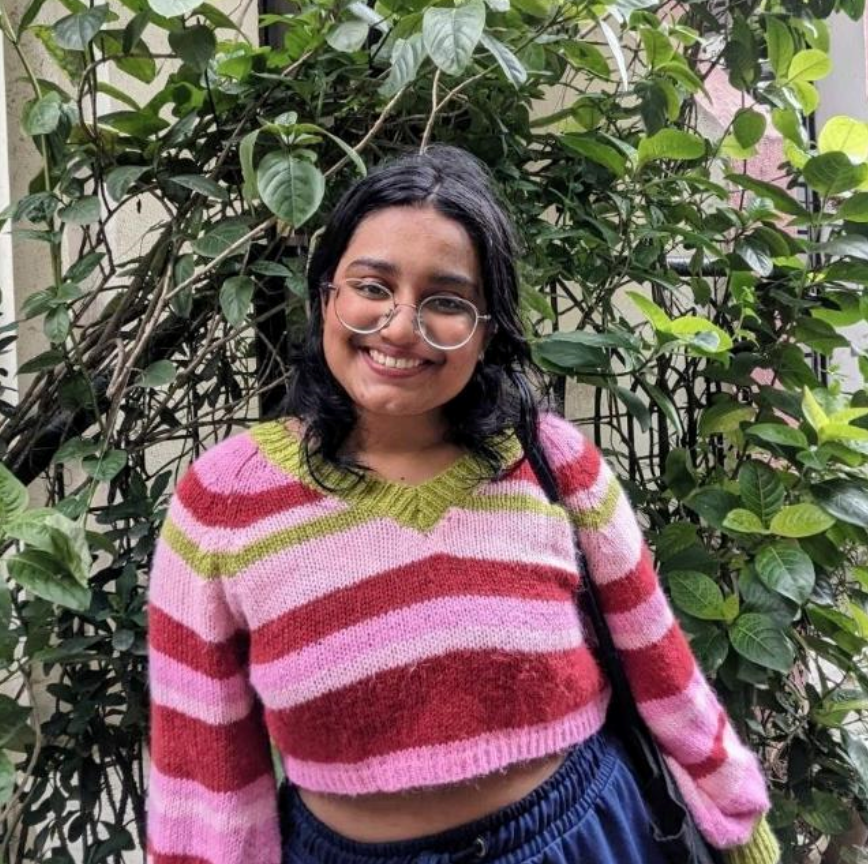

|  |
Sanskruti B.A Pre Final Year Student | Web Developer | ML Enthuiast |
As a pre-final year student pursuing a B.Tech in Computer Science and Technology at UMIT, Mumbai,
I am a dynamic and inquisitive learner with a profound passion for technology.
My primary aim is to harness cutting-edge technologies and frameworks to devise pragmatic solutions
for real-world problems.
With a dedicated commitment to web development, I thrive on coding,
bolstered by my affection for coffee and strong communication abilities. My interests extend into
the realms of machine learning and finance, compelling me to continuously explore diverse frameworks and tools.
My ultimate aspiration is to give back to the community by sharing the knowledge and
skills I acquire along this enriching journey.
Usha Mittal Institute of Technology, SNDTWU, Mumbai.
Mahatma Phule Jr College, Malegaon, Nashik.
S.R.Z.Kakani Kanya Vidyalaya, Malegaon, Nashik.
C++ | C | Java |Python | HTML | JavaScript | CSS | Kotlin
Machine Learning | Deep Learning | Web Development (MERN Stack) | Android Development | Cloud Computing
Git | Github | VSCode | GNU Octave| Linux | Windows | Tensoflow | React.JS | Google Collab | Docker | Flutter | Firebase
Slack | Figma | Canva | PostgreSQL | MongoDB | Flask | Jupyter | Google Suite | Keras | NumPy | PyTorch | OpenCV | Pandas
Object-oriented Programming | Database Management Systems | Software Engineering | Data Structures and Algorithms | Operating Systems
Leadership | Problem Solving | Critical Thinking | Time Management | Creativity | Teeam Work | Strong Interpersonal Skills
As Creative Head at UMIT Student Council, I lead creative decision-making and design engaging social media content, while also playing a pivotal role in event management and cultural leadership.
As a dedicated member of GDSC UMIT, I've beem enthusiastically engaging in diverse student activities which foster a sense of community, and I actively participate in webinars, hackathons, and technical skill development.
As a representative of GFG (formerly CodeChef) UMIT Chapter, I expanded my tech stack knowledge, honed my problem-solving skills, and gained valuable experience in C/C++ through collaborative peer programming.